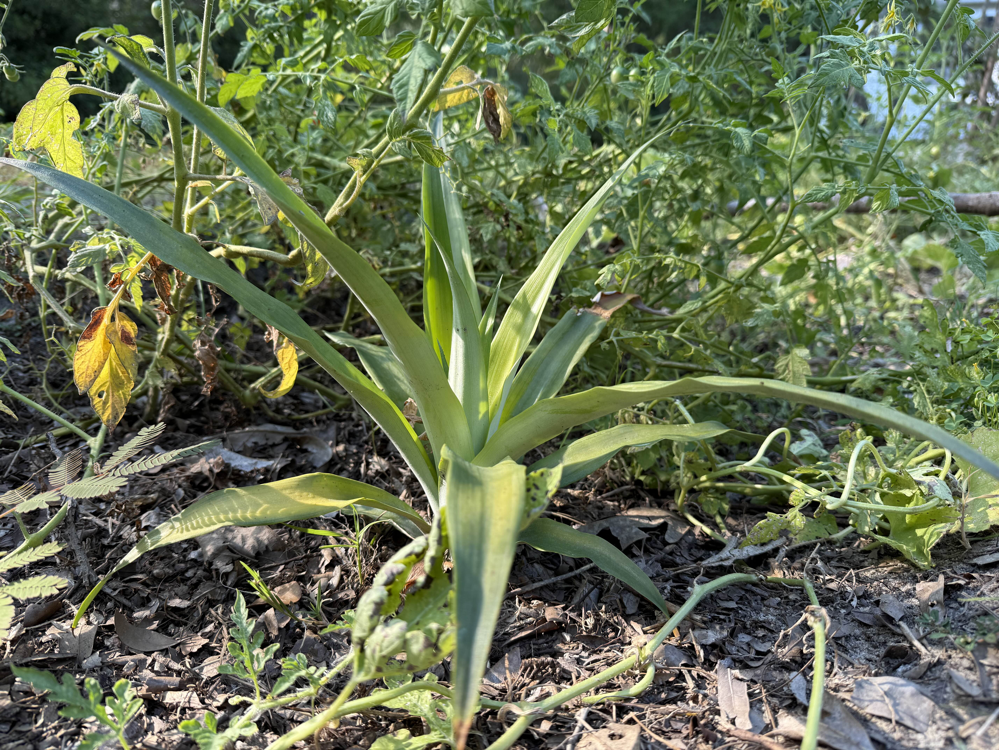
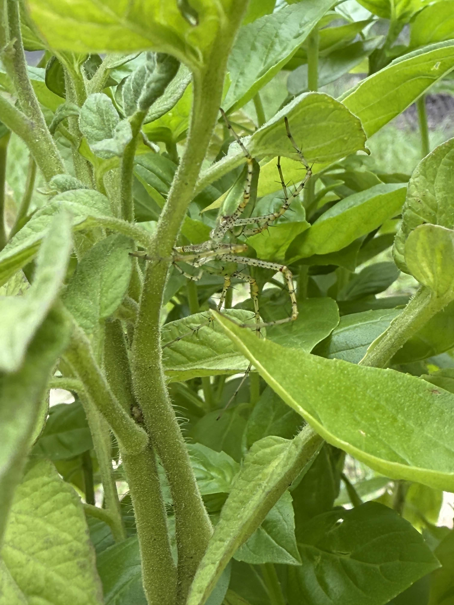
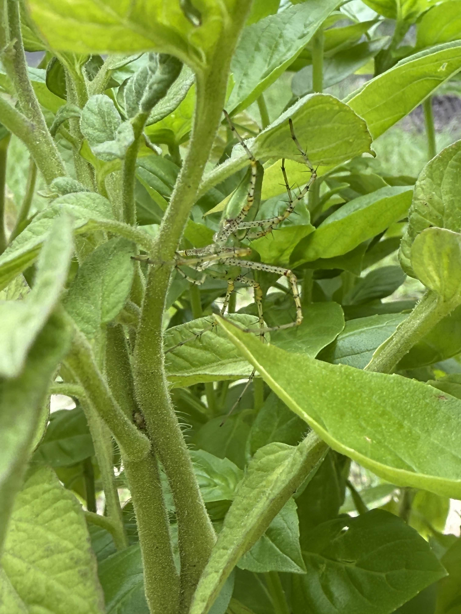
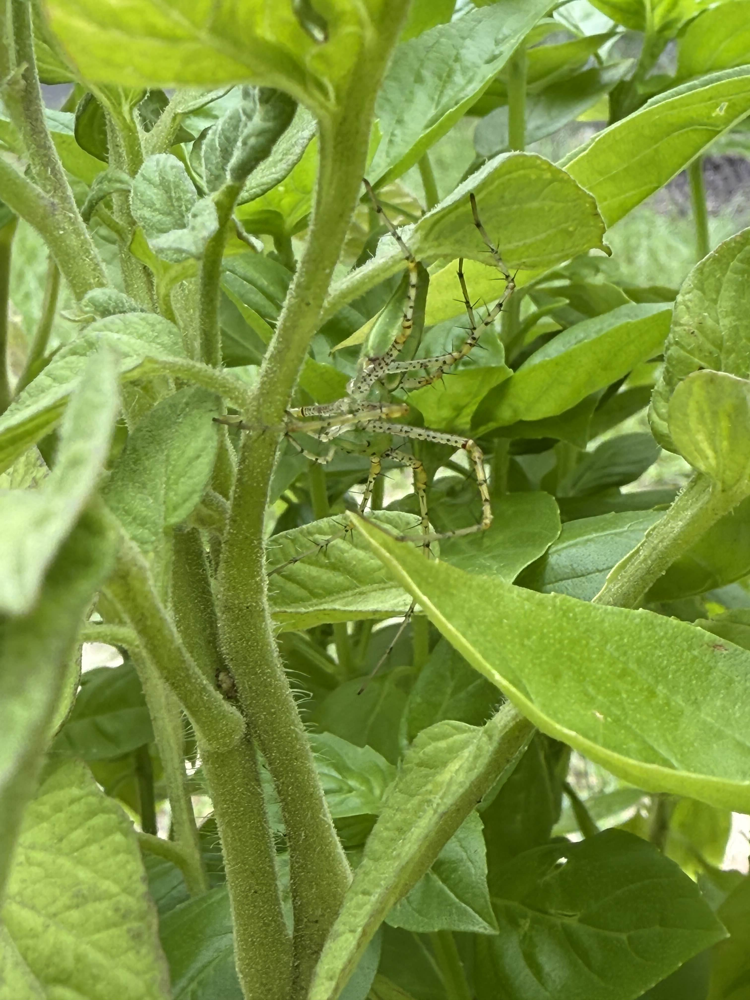
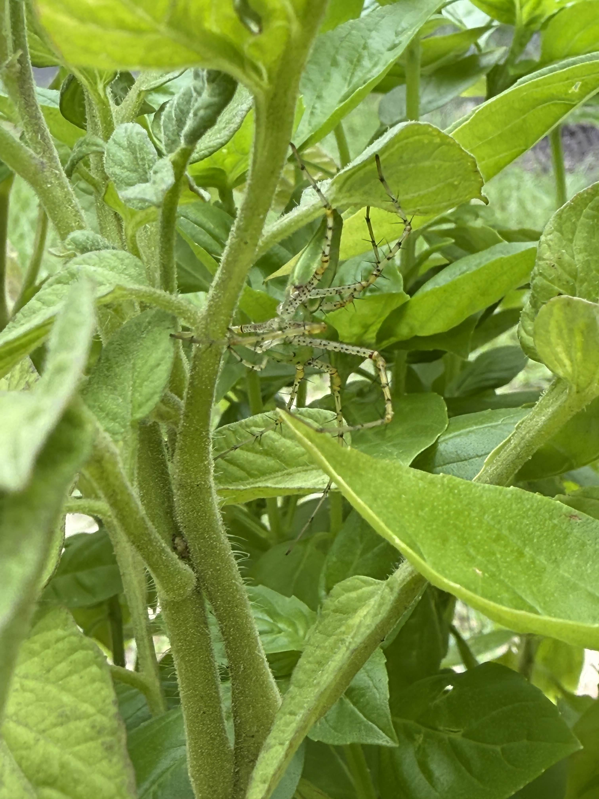

 


Understanding the foundation of healthy Soil

Soil health is the biggest factor in having a thriving farm. all sorts of Micobiology live under the soil and create what we call the Soil Food Web, these microbes trade and excavate nutrients from the soil in return for sugars that are produced from photosynthesis, they essentially create a network providing things that the others cant produce. when the soil food web is balanaced and full of bacteria and fungi which both are important, plants grow in perfect conditions, less stresson the plant means less pest damage, and less maintance of the plant itself because the soil and its biology do almost all the work. Microbiology, water, sunlight, and C02 are the biggest factors when it comes to soil health.

Nutrients are what plants need to grow, but it’s not just about dumping fertilizer on the ground. In thesoil, biology breaks down organic matter and turns it into plant avaiable nutrients. relying only on chemical and syntheic fertilzers, the balance of the soil get disrupted, the chemical kill bacteria and fungi in the soil as well soil compaction actually stops the chemical fertlizers from being broken down leaving them to just stay in the soil. Keeping the nutrients cycling naturally is better for the soil and the food it grows the main use of nutrients is actually to feed the microbiology in the soil because they do all work.
Composting gets a bad rep, most people complain how it smells, is hard to manage, and is very complicated to successfully compost organic matter. But as long as you keep a few ideas in mind its actually one of the easiest and cheapest ways to add more beneficial bacteria and nutrients to feed them. Simply get a roughly 50 50 split of Carbon material like leaf litter, or wood chips, or really anything decaying and brown. and then you need an equal mix of green nitrogen materials which could be anything from lawn clippings, food scraps, leaves from trimmed bushes, and even pesky weeds growing around your property.